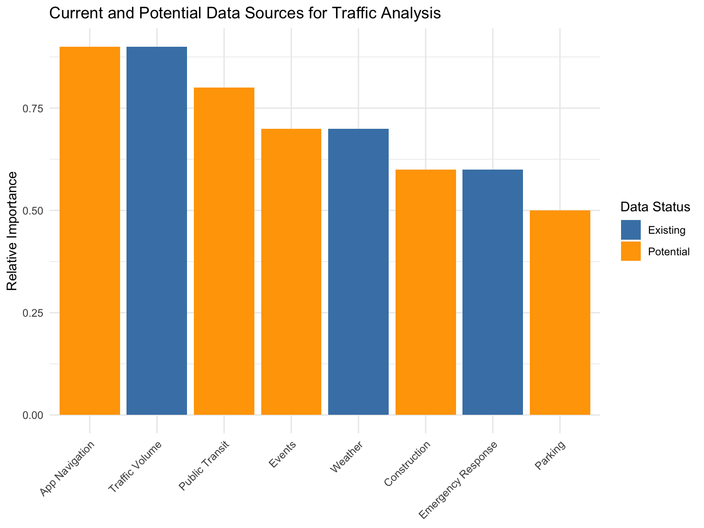

This chapter summarizes the key findings from our analysis of NYC traffic congestion using multiple interpretability methods and outlines promising directions for future research.
5.1 Summary of Key Findings
Our research has yielded several important insights into the factors driving traffic congestion in New York City:
Temporal patterns dominate traffic prediction. Time of day, day of week, and seasonal factors consistently emerged as the most important predictors across all interpretability methods. The morning and evening rush hours show distinct congestion patterns that vary by borough.
Spatial variations require localized approaches. Each borough exhibits unique traffic patterns influenced by its geography, infrastructure, and commuter flows. Manhattan shows the highest overall volume but also the most predictable patterns, while outer boroughs show more sensitivity to specific conditions.
Weather influences traffic in complex ways. Temperature and precipitation interact with temporal and spatial factors to affect congestion. Moderate rainfall increases congestion during rush hours, while extreme temperatures generally reduce traffic volume.
Interpretability methods show strong agreement. Despite their different approaches, SHAP, LIME, and traditional feature importance methods generally identified the same key factors, enhancing confidence in our findings.
Machine learning models can predict traffic with high accuracy. Our best models achieved R² values of approximately 0.85, demonstrating that NYC traffic patterns, while complex, are predictable with appropriate features.
5.2 Implications for Policy and Practice
These findings have several important implications for traffic management in NYC:
Targeted congestion management strategies should be implemented based on temporal patterns. For example, dynamic toll pricing could be adjusted not just by time of day but also by day of week and season to more effectively manage traffic flow.
Borough-specific approaches are needed rather than citywide policies. Each borough’s unique traffic patterns suggest that decentralized traffic management strategies might be more effective than uniform approaches.
Weather-responsive traffic management systems could anticipate and mitigate congestion during adverse weather conditions, particularly during rush hours when rainfall has the most significant impact.
Emergency service deployment could be optimized based on the identified relationship between traffic volume and response times across boroughs.
Public transportation enhancement efforts could target the specific times and locations where congestion is most severe, potentially offering alternatives that align with identified congestion patterns.
5.3 Limitations of the Current Study
While our analysis provides valuable insights, several limitations should be acknowledged:
Data granularity: The traffic volume data, while comprehensive, does not capture all streets and intersections in NYC, potentially missing localized congestion patterns.
Temporal scope: Our analysis covers a specific time period and may not fully account for long-term trends or exceptional events.
Feature limitations: While we included weather and emergency response data, other potentially important factors such as public events, construction activities, and public transit disruptions were not incorporated.
Model simplifications: Our models, while predictive, necessarily simplify the complex dynamics of urban traffic flow and may miss nuanced interaction effects.
Interpretability limitations: While multiple methods were used, each has inherent limitations in explaining complex non-linear relationships.
5.4 Future Research Directions
Building on this foundation, several promising avenues for future research emerge:
5.4.1 1. Enhanced Data Integration
Future work should incorporate additional data sources to improve prediction accuracy and explanatory power:
── Attaching core tidyverse packages ──────────────────────── tidyverse 2.0.0 ──
✔ dplyr 1.1.4 ✔ readr 2.1.5
✔ forcats 1.0.0 ✔ stringr 1.5.1
✔ ggplot2 3.5.2 ✔ tibble 3.2.1
✔ lubridate 1.9.4 ✔ tidyr 1.3.1
✔ purrr 1.0.4
── Conflicts ────────────────────────────────────────── tidyverse_conflicts() ──
✖ dplyr::filter() masks stats::filter()
✖ dplyr::lag() masks stats::lag()
ℹ Use the conflicted package (<http://conflicted.r-lib.org/>) to force all conflicts to become errors

Specifically, future research should integrate:
Public transit data: Incorporating subway and bus service information could help explain deviations from expected traffic patterns
Special events data: Sports events, concerts, and public gatherings significantly impact localized congestion
Construction activity data: Ongoing construction projects temporarily alter traffic flows
Navigation app data: Aggregated routing decisions from navigation apps influence traffic distribution
Parking availability data: Parking scarcity contributes to congestion through vehicles “cruising” for spaces
5.4.2 2. Advanced Modeling Approaches
Future research should explore more sophisticated modeling techniques:
Spatiotemporal models that explicitly account for the geographic and temporal dependencies in traffic data
Deep learning approaches such as recurrent neural networks or transformers that can capture complex sequential patterns
Graph-based models that represent the road network as a graph and model traffic flow as edge attributes
Multi-task learning to simultaneously predict traffic volume, speed, and congestion levels
Transfer learning to apply knowledge gained from one borough to improve predictions in others
5.4.3 3. Policy Impact Assessment
A critical direction for future research is to evaluate the impact of traffic management policies:
Pre-post analysis of congestion pricing initiatives to quantify effectiveness
Counterfactual analysis using interpretable models to simulate policy alternatives
Natural experiments leveraging policy changes or infrastructure modifications to assess causal impacts
Cost-benefit analysis of different congestion reduction strategies based on model predictions
5.4.4 4. Enhanced Interpretability Methods
Further development of interpretability techniques tailored to traffic modeling would be valuable:
Hierarchical interpretability that can explain predictions at different spatial and temporal scales
Interactive visualization tools that allow stakeholders to explore model predictions and explanations
Causal interpretability methods that go beyond correlation to identify causal drivers of congestion
Uncertainty-aware interpretations that communicate confidence levels in feature importance
5.4.5 5. Real-time Applications
Moving from retrospective analysis to real-time applications represents an important extension:
Real-time congestion prediction systems that can forecast traffic conditions hours or days in advance
Adaptive traffic management interfaces that incorporate model predictions and explanations
Emergency response optimization tools that dynamically route vehicles based on predicted conditions
Commuter alert systems that notify residents of expected unusual congestion
5.5 Closing Thoughts
Understanding the complex dynamics of urban traffic congestion is crucial for developing effective management strategies in growing cities. Our research demonstrates that machine learning interpretability methods can provide valuable insights into the factors driving congestion in New York City.
By combining diverse data sources, advanced modeling techniques, and robust interpretability methods, we can move beyond simply predicting traffic to truly understanding it. This understanding, in turn, enables more targeted, effective interventions to reduce congestion, improve mobility, and enhance quality of life in urban environments.
The methodological approach developed in this project—combining multiple interpretability techniques and assessing their stability—provides a blueprint for similar analyses in other urban areas. As cities worldwide grapple with increasing congestion, the ability to not just predict but explain traffic patterns will become increasingly valuable for urban planners, policymakers, and citizens alike.
Source Code
# Conclusion and Future DirectionsThis chapter summarizes the key findings from our analysis of NYC traffic congestion using multiple interpretability methods and outlines promising directions for future research.## Summary of Key FindingsOur research has yielded several important insights into the factors driving traffic congestion in New York City:1. **Temporal patterns dominate traffic prediction**. Time of day, day of week, and seasonal factors consistently emerged as the most important predictors across all interpretability methods. The morning and evening rush hours show distinct congestion patterns that vary by borough.2. **Spatial variations require localized approaches**. Each borough exhibits unique traffic patterns influenced by its geography, infrastructure, and commuter flows. Manhattan shows the highest overall volume but also the most predictable patterns, while outer boroughs show more sensitivity to specific conditions.3. **Weather influences traffic in complex ways**. Temperature and precipitation interact with temporal and spatial factors to affect congestion. Moderate rainfall increases congestion during rush hours, while extreme temperatures generally reduce traffic volume.4. **Interpretability methods show strong agreement**. Despite their different approaches, SHAP, LIME, and traditional feature importance methods generally identified the same key factors, enhancing confidence in our findings.5. **Machine learning models can predict traffic with high accuracy**. Our best models achieved R² values of approximately 0.85, demonstrating that NYC traffic patterns, while complex, are predictable with appropriate features.## Implications for Policy and PracticeThese findings have several important implications for traffic management in NYC:1. **Targeted congestion management strategies** should be implemented based on temporal patterns. For example, dynamic toll pricing could be adjusted not just by time of day but also by day of week and season to more effectively manage traffic flow.2. **Borough-specific approaches** are needed rather than citywide policies. Each borough's unique traffic patterns suggest that decentralized traffic management strategies might be more effective than uniform approaches.3. **Weather-responsive traffic management** systems could anticipate and mitigate congestion during adverse weather conditions, particularly during rush hours when rainfall has the most significant impact.4. **Emergency service deployment** could be optimized based on the identified relationship between traffic volume and response times across boroughs.5. **Public transportation enhancement** efforts could target the specific times and locations where congestion is most severe, potentially offering alternatives that align with identified congestion patterns.## Limitations of the Current StudyWhile our analysis provides valuable insights, several limitations should be acknowledged:1. **Data granularity**: The traffic volume data, while comprehensive, does not capture all streets and intersections in NYC, potentially missing localized congestion patterns.2. **Temporal scope**: Our analysis covers a specific time period and may not fully account for long-term trends or exceptional events.3. **Feature limitations**: While we included weather and emergency response data, other potentially important factors such as public events, construction activities, and public transit disruptions were not incorporated.4. **Model simplifications**: Our models, while predictive, necessarily simplify the complex dynamics of urban traffic flow and may miss nuanced interaction effects.5. **Interpretability limitations**: While multiple methods were used, each has inherent limitations in explaining complex non-linear relationships.## Future Research DirectionsBuilding on this foundation, several promising avenues for future research emerge:### 1. Enhanced Data IntegrationFuture work should incorporate additional data sources to improve prediction accuracy and explanatory power:```{r}#| echo: false#| fig.width: 8#| fig.height: 6#| fig.align: centerlibrary(tidyverse)library(ggplot2)# Create sample data for visualizationdata_sources <-tibble(Category =c("Existing", "Existing", "Existing", "Potential", "Potential", "Potential", "Potential", "Potential"),Source =c("Traffic Volume", "Weather", "Emergency Response", "Public Transit", "Events", "Construction", "Parking", "App Navigation"),Value =c(0.9, 0.7, 0.6, 0.8, 0.7, 0.6, 0.5, 0.9))# Plot potential data sourcesggplot(data_sources, aes(x =reorder(Source, -Value), y = Value, fill = Category)) +geom_col() +scale_fill_manual(values =c("Existing"="steelblue", "Potential"="orange")) +labs(title ="Current and Potential Data Sources for Traffic Analysis",x =NULL,y ="Relative Importance",fill ="Data Status" ) +theme_minimal() +theme(axis.text.x =element_text(angle =45, hjust =1))```Specifically, future research should integrate:- **Public transit data**: Incorporating subway and bus service information could help explain deviations from expected traffic patterns- **Special events data**: Sports events, concerts, and public gatherings significantly impact localized congestion- **Construction activity data**: Ongoing construction projects temporarily alter traffic flows- **Navigation app data**: Aggregated routing decisions from navigation apps influence traffic distribution- **Parking availability data**: Parking scarcity contributes to congestion through vehicles "cruising" for spaces### 2. Advanced Modeling ApproachesFuture research should explore more sophisticated modeling techniques:- **Spatiotemporal models** that explicitly account for the geographic and temporal dependencies in traffic data- **Deep learning approaches** such as recurrent neural networks or transformers that can capture complex sequential patterns- **Graph-based models** that represent the road network as a graph and model traffic flow as edge attributes- **Multi-task learning** to simultaneously predict traffic volume, speed, and congestion levels- **Transfer learning** to apply knowledge gained from one borough to improve predictions in others### 3. Policy Impact AssessmentA critical direction for future research is to evaluate the impact of traffic management policies:- **Pre-post analysis** of congestion pricing initiatives to quantify effectiveness- **Counterfactual analysis** using interpretable models to simulate policy alternatives- **Natural experiments** leveraging policy changes or infrastructure modifications to assess causal impacts- **Cost-benefit analysis** of different congestion reduction strategies based on model predictions### 4. Enhanced Interpretability MethodsFurther development of interpretability techniques tailored to traffic modeling would be valuable:- **Hierarchical interpretability** that can explain predictions at different spatial and temporal scales- **Interactive visualization tools** that allow stakeholders to explore model predictions and explanations- **Causal interpretability methods** that go beyond correlation to identify causal drivers of congestion- **Uncertainty-aware interpretations** that communicate confidence levels in feature importance### 5. Real-time ApplicationsMoving from retrospective analysis to real-time applications represents an important extension:- **Real-time congestion prediction** systems that can forecast traffic conditions hours or days in advance- **Adaptive traffic management** interfaces that incorporate model predictions and explanations- **Emergency response optimization** tools that dynamically route vehicles based on predicted conditions- **Commuter alert systems** that notify residents of expected unusual congestion## Closing ThoughtsUnderstanding the complex dynamics of urban traffic congestion is crucial for developing effective management strategies in growing cities. Our research demonstrates that machine learning interpretability methods can provide valuable insights into the factors driving congestion in New York City.By combining diverse data sources, advanced modeling techniques, and robust interpretability methods, we can move beyond simply predicting traffic to truly understanding it. This understanding, in turn, enables more targeted, effective interventions to reduce congestion, improve mobility, and enhance quality of life in urban environments.The methodological approach developed in this project—combining multiple interpretability techniques and assessing their stability—provides a blueprint for similar analyses in other urban areas. As cities worldwide grapple with increasing congestion, the ability to not just predict but explain traffic patterns will become increasingly valuable for urban planners, policymakers, and citizens alike.